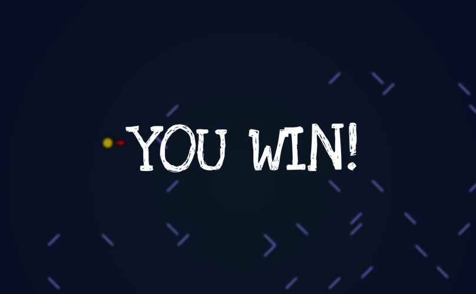
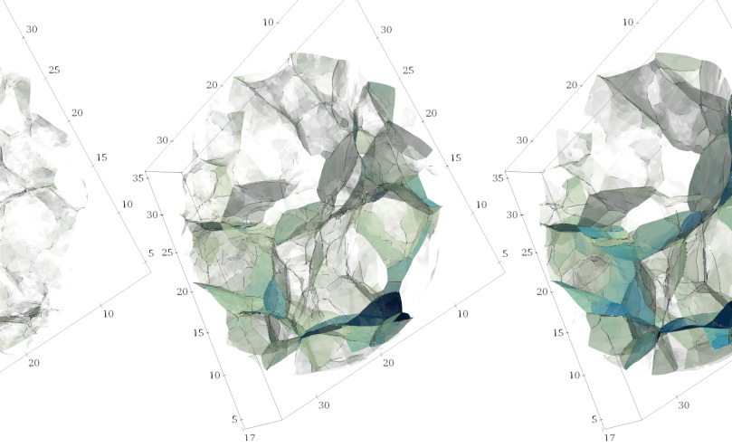
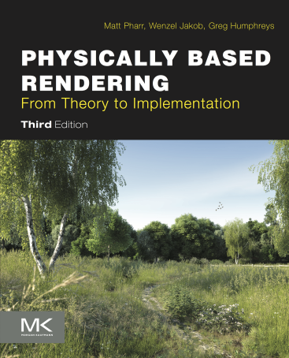
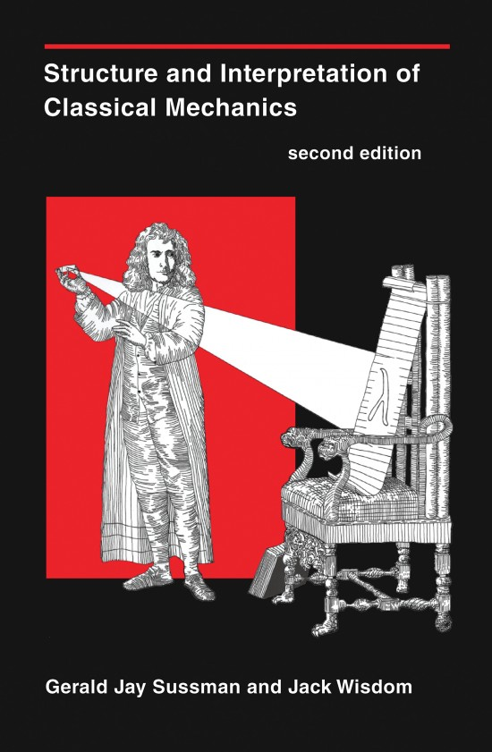
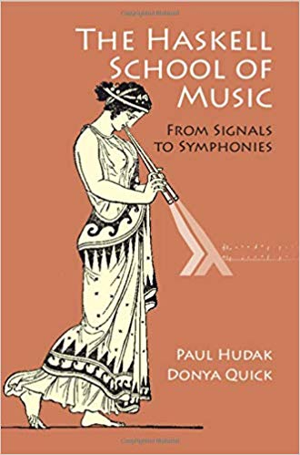

Find us on Github
Find us on GithubLiterate programming /ˈlɪtəɹət ˈpɹəʊɡɹæmɪŋ/ (computing) Literate programming is a programming paradigm introduced by Donald Knuth in which a program is given as an explanation of the program logic in a natural language, such as English, interspersed with snippets of macros and traditional source code, from which a compilable source code can be generated. Wikipedia
- Create live documents in Markdown
- Program in any language you like
- Use your favourite editor
- Works well with version control
- Powered by Pandoc
Get started
“A critical aspect of a programming language is the means it provides for using names to refer to computational objects.” Abelson, Sussman & Sussman - SICP
Name your code
“Let us change our traditional attitude to the construction of programs: Instead of imagining that our main task is to instruct a computer what to do, let us concentrate rather on explaining to human beings what we want a computer to do.” Knuth - Literate Programming
Compose your program
To count the words in a sentence, first
split the sentence into words, then
count the number of words in the list.
``` {.python #word-count}
def word_count(sentence):
<<split-into-words>>
<<count-words>>
return count
```
The default arguments to the `.split`
method split on any white space.
``` {.python #split-into-words}
words = sentence.split()
```
Counting is done with the `length`
function.
``` {.python #count-words}
count = len(words)
```To count the words in a sentence, first split the sentence into words, then count the number of words in the list.
The default arguments to the .split method split on any white space.
Counting is done with the len function.
“Talk is cheap. Show me the code.” Linus Torvalds
Test your documentation
Entangled
Entangled makes literate programming easier. It keeps the markdown and program source in sync. This makes it more convenient to extend and debug your literate code.
Python filters
We have created a set of Python based Pandoc filters that can:
- Tangle your code
- Add name tags to rendered output
- Run documentation tests through Jupyter
The Python filters act as prototyping platform for features that will be included with Entangled. It is easy to install and has almost no dependencies outside of Pandoc and a recent version of Python (≥ 3.7). This also makes the Python filters very easy to setup on automated builds, like Github Actions.
More information on these Pandoc filters: https://github.com/entangled/filters
Demo Gallery
Hello, World!
Hello World in C++: Teaches the basics of literate programming using Markdown and fenced code blocks. Also shows how to use a BibTeX file for references.
99 Bottles
99-bottles in C++: Over-engineered song-text generator. Teaching how to setup a basic C++ program with enTangleD, use of ArgAgg to parse command-line arguments, use of FmtLib to do string formatting and setting up a slightly non-basic Makefile.
Slasher

Slasher: a browser game written in Elm. A dashing hero is zipping across the screen, only deflected by slashes and backslashes. The game works, but the source may need some more literacy in some places.
Cosmic web

Adhesion code: presenting the cosmological adhesion model and its implementation in C++ and CGAL.
External Links
Literate Books
These are some awesome books written with a literate philosophy in mind.
Pharr, Jakob & Humphreys - Physically Based Rendering

Explains physically realistic 3D rendering, while implementing the same techniques in C++. This book is so amazing, it actually won an Acadamy Award for technical achievement. The book follows the same noweb notation for code block references we do.
Sussman & Wisdom - Structure and Interpretation of Classical Mechanics

Does not use noweb, but subscribes to the many founding principles of literate programming. This is a text book on classical mechanics and specifically the Lagrangian and Hamiltonian discriptions of physics. The aim of translating concepts in classical mechanics to scheme code forced the authors to adopt a different notation for the underlying mathematics, because the traditional notation is too ambiguous.
Hudak & Quick - The Haskell School of Music

From signals to symphonies, this book fuses the authors’ passion for music and the Haskell programming language.
Pandoc filters
Knitty
Expands code-cells through a Jupyter interface. Uses Panflute.
pandocsql
Inserts tables in your markdown into an Sqlite database, and run queries that appear as tables in the output. Uses Panflute.
Dev tools
Panflute
A “Pythonic” interface for creating Pandoc filters.